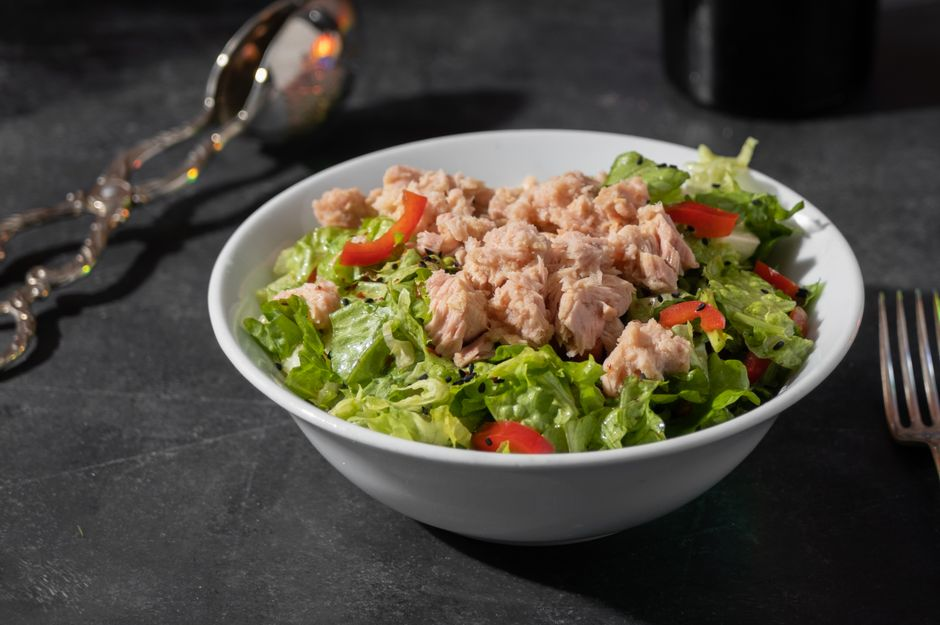

Sustitutos naturales para ahorrar en los platos diarios
Como estudiante, es común buscar formas de ahorrar en la alimentación sin renunciar a comidas sana y equilibrada. En esta entrada, te presento cinco sustitutos naturales que podrás incorporar fácilmente a tu dieta diaria para reducir los gastos en los alimentos.

Photo: Tuğba ÖZTÜRK / Pexels
1. Sustituye el queso con lechuga en ensaladas
El queso es un ingrediente que puede ser costoso, especialmente si eliges versiones más caras como el parmesano o el gorgonzola. Sin embargo, la lechuga puede ser una gran alternativa. Para obtener el mismo sabor de suavidad y cremosidad, solo necesitas picar la lechuga en trozos pequeños y mezclarla con otros ingredientes de la ensalada. Por ejemplo, en una ensalada de tomate y lechuga, podrías añadir 2 cucharadas de queso de cabra rallado para un sabor similar.
2. Reemplaza la carne con legumbres
Las legumbres son una gran opción para ahorrar en proteínas al ser más económicas que la carne. Además, son un alimento muy versátil. Por ejemplo, puedes preparar una pasta con tomates y lentejas. Solo necesitas cocinar las lentejas durante 20 minutos, mezclarlas con tomates, cebolla y un poco de perejil, y luego agregar la pasta cocida. Esto te resultará en un plato rico y nutritivo que costará menos de la mitad que una receta tradicional con carne.
3. Utiliza huevos en lugar de queso rallado
Los huevos son un sustituto perfecto para el queso rallado en muchas recetas, especialmente en ensaladas o sándwiches. Para una receta de pasta al pesto, podrías utilizar 2 huevos en lugar de queso rallado. Basta con mezclar los huevos con los ingredientes típicos del pesto, como la albahaca, el ajo y el parmesano rallado. Esto no solo te ahorrará dinero, sino que también evitará que los huevos se sechen demasiado en la receta.
4. Sustituye el yogur con leche condensada
El yogur es un ingrediente que puede ser caro, pero la leche condensada es una excelente alternativa. Puedes usarla para hacer un postre como el flan, simplemente reemplazando el yogur por la leche condensada en la receta. Solo necesitas cocinar la leche condensada con azúcar y vainilla durante 15 minutos, luego añadirle huevo y cocinarlo por otros 15 minutos. El resultado será un flan delicioso y mucho más económico.
5. Utiliza fresas en lugar de arándanos
Si normalmente compras arándanos para hacer una receta, puedes optar por fresas. Las fresas son más económicas que los arándanos y, además, aportan un sabor similar. Por ejemplo, en un sorbete de fresas, puedes reemplazar los arándanos por 200 gramos de fresas. Solo necesitas licuar las fresas, añadir un poco de azúcar y azúcar de limón, y luego colocarlas en el congelador durante 3 horas. El resultado será un sorbete rico en sabor y mucho más económico.
En resumen, estas son solo algunas de las maneras en las que puedes ahorrar en tu alimentación diaria sin renunciar a alimentos nutritivos y deliciosos. Recuerda que los pequeños cambios pueden sumar un gran ahorro a lo largo del tiempo.